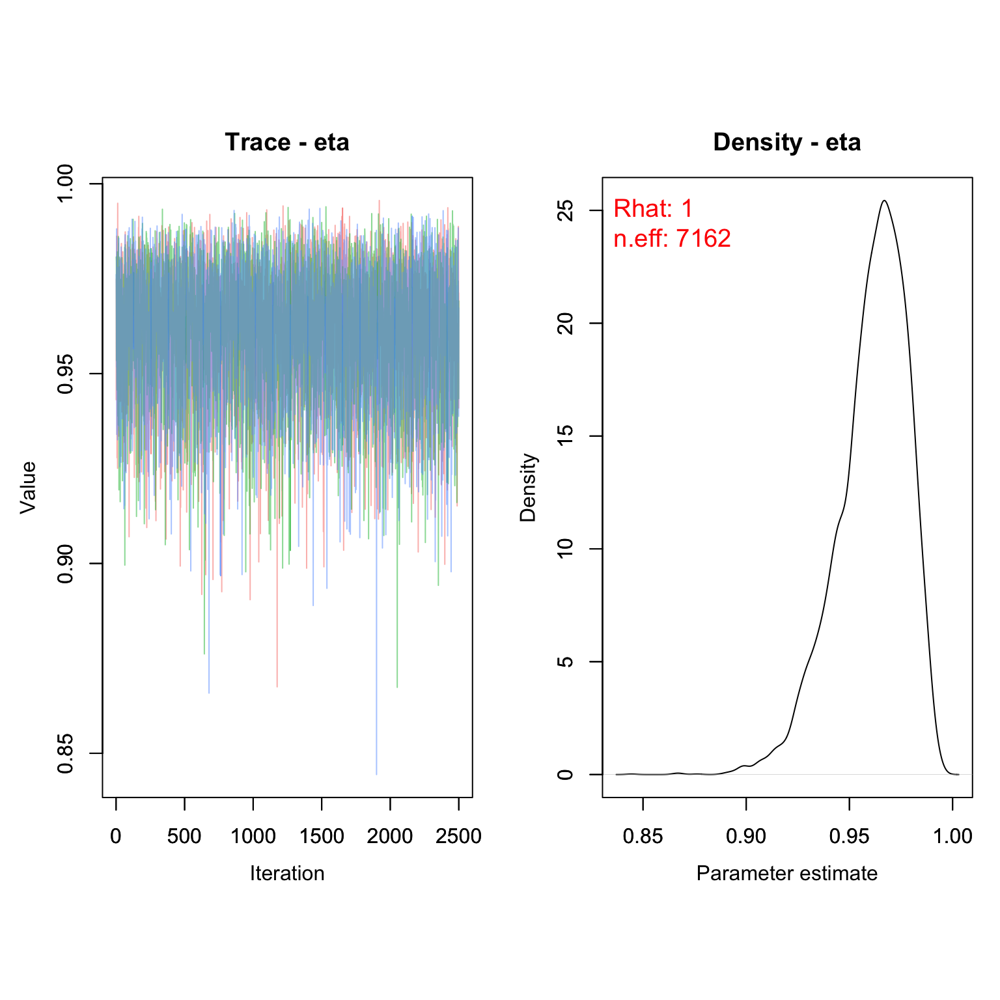
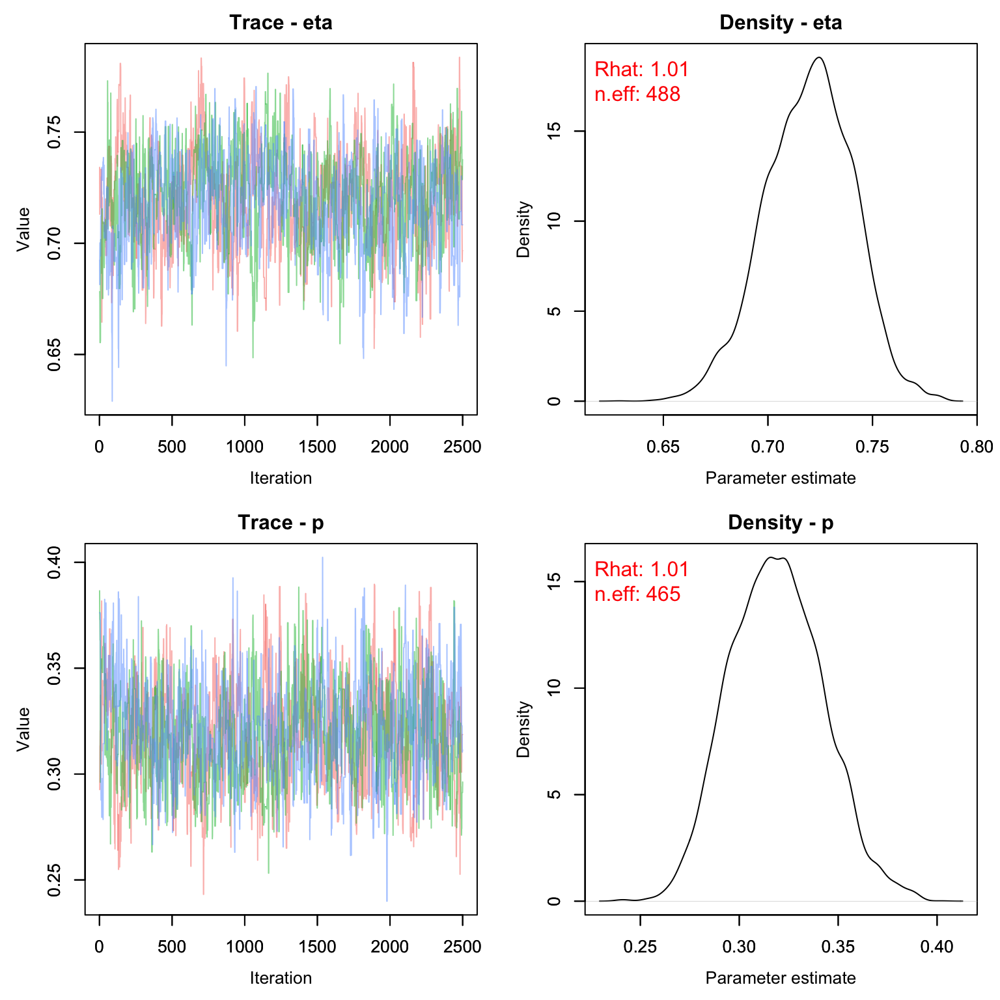

Lab10: Discrete Survival Models
Lab10_CJS.RmdIn this exercise, we’ll look at how our estimates might change when we fit data with imperfect detection to both a known-fate and a CJS model. In this case, we’ll be using a CJS model to estimate ‘apparent infection rate’ rather than survival to demonstrate how these models can be used for more than just live/dead tracking of animals.
The Data Set
Today’s lab will work with data we saw in class - frog and toad capture recapture information from a published study on chytrid fungus.
Here’s the citation: Russell, R.E., Halstead, B.J., Fisher, R.N., Muths, E.L., Adams, M.J., and Hossack, B.R., 2019, Amphibian capture mark-recapture: U.S. Geological Survey data release, https://doi.org/10.5066/P9LNLEDF.
In lecture we looked at how we might model apparent survival using these data, but completely ignore the infection status of animals. Now, let’s see if we can model apparent infection - the joint probability that an animal survives and becomes infected with chytrid. We will assume once an animal gets the disease it is positive for the rest of its life.
Known-fate Style
It is often tempting to ignore detection probability when modeling capture mark recapture data. However, doing so will often give you biased information about the parameter of interest.
If we were to fit a very simple known fate model to our data, it might look something like this:
KnownFrogs <- nimbleCode({
eta ~ dbeta(1, 1)
for(i in 1:nind){
for(t in (first_live[i]+1):last_live[i]){
z[i,t] ~ dbern(eta)
}
}
})In this case eta (\eta) is not survival but rather the probability of getting the disease, conditional on surviving. We will not estimate survival directly. If the animal is infected, z = 0 and we stop monitoring the animal in our study.
Let’s organize the data to fit this simple model. We’ll use the boreal toad (Rana muscosa) in California for this example. As in lecture, we will only concern ourselves with the yearly level, not the capture-date level. Thus, if an animal ever tested positive during a given year, we will mark it as positive for the entire year.
data("WyomingFrogs")
Rmus <- subset(frog_caps, frog_caps$Species == 'Rana muscosa')
Rmus$Bd <- ifelse(Rmus$Bd.presence %in% c('Negative', 'negative'), 1, ifelse(Rmus$Bd.presence == 'Positive', 0, NA) )
Rmus$id <- as.numeric(as.factor(Rmus$Ind.ID))
Rmus$date <- as.Date(Rmus$Survey.Date, format = '%m/%d/%y')
Rmus$year <- as.numeric(format(Rmus$date, '%y'))
Rmus$occ <- as.numeric(as.factor(Rmus$year))
head(Rmus)
#> # A tibble: 6 × 11
#> Ind.ID Survey.Date Project Species Sex Bd.presence Bd id date
#> <chr> <chr> <chr> <chr> <chr> <chr> <dbl> <dbl> <date>
#> 1 20836382 9/17/10 CA Rana mu… Male Negative 1 100 2010-09-17
#> 2 20836382 7/7/09 CA Rana mu… Male Negative 1 100 2009-07-07
#> 3 20836382 6/5/12 CA Rana mu… Male Negative 1 100 2012-06-05
#> 4 20839859 5/27/09 CA Rana mu… Male Positive 0 101 2009-05-27
#> 5 20840567 5/27/09 CA Rana mu… Fema… Negative 1 102 2009-05-27
#> 6 20841578 8/15/14 CA Rana mu… Fema… Negative 1 103 2014-08-15
#> # ℹ 2 more variables: year <dbl>, occ <dbl>We need to organize our data so that we get the capture history and determine the first and last time we saw the animal in its negative state.
nind <- length(unique(Rmus$id))
nocc <- length(unique(Rmus$occ))
z <- array(NA, c(nind, nocc))
for(j in 1:nrow(Rmus)){
z[Rmus$id[j],Rmus$occ[j]] <- Rmus$Bd[j]
}One major problem is, of course, that there IS a lot of detection error, so we have to do a lot of thinning of our data to remove all the all-NA rows and the all-0 rows. We also need to remove all the individuals who were not seen in at least two consecutive time periods (neither the first capture nor the second capture cannot be NA).
new.z <- z[rowSums(z, na.rm = T) > 0,] #get rid of ones with no negative caps
first <- apply(new.z, 1, function(row) {
which(row > 0)[1] # Returns the index of the first detection
})
last <- array(NA, nrow(new.z))
for(j in 1:nrow(new.z)){
if(first[j] == nocc) next
last[j] <- which(is.na(new.z[j, (first[j]+1):nocc]))[1]+first[j]-1
}
z_useable <- new.z[which(last-first > 0),]
first.use <- first[which(last-first > 0)]
last.use <- last[which(last-first > 0)]
#Make sure censors are correct:
for(k in 1:nrow(z_useable)){
if(first.use[k] != 1){
z_useable[k, 1:(first.use[k]-1)] <- NA
}
if(last.use[k] != nocc){
z_useable[k, (last.use[k]+1):nocc] <- NA
}
}
nind <- nrow(z_useable)Now we can make some objects for nimble and send them to the model:
nd <- list(z = z_useable)
nc <- list(nind = nind,
first_live = first.use,
last_live = last.use)
ni <- list(eta = rbeta(1,1,1))
params <- c('eta')Check that everything is working properly:
prepnim <- nimbleModel(code = KnownFrogs, constants = nc,
data = nd, inits = ni, calculate = T)
prepnim$initializeInfo() #will tell you what is or isn't initialized
prepnim$calculate() #if this is NA or -Inf you know it's gone wrong
#> [1] -20.42Run the model:
frogs_kf <- nimbleMCMC(code = KnownFrogs,
data = nd,
constants = nc,
inits = ni,
monitors = params,
thin = 1,
niter = 5000,
nburnin = 2500,
nchains = 3,
samplesAsCodaMCMC = TRUE
)Check the chains. Remember that we defined eta as similar to survival, so we’re really most interested in 1-eta (probability of infection).
MCMCvis::MCMCtrace(frogs_kf, pdf = F, Rhat = T, n.eff = T)
This model suggests the annual probability of infection (conditional on survival) is around 3.5%
1- MCMCvis::MCMCsummary(frogs_kf, Rhat = F, n.eff = F)
#> mean sd 2.5% 50% 97.5%
#> eta 0.03892 0.983 0.07726 0.03637 0.01294Of course, this was fit with a model that is inappropriate for this type of data. Let’s see what happens when we fit a model that account for detection probability.
CJS Style
For the CJS style model, we will fit a very similar model, but account for detection probability in our estimates.
UnknownFrogs <- nimbleCode({
eta ~ dbeta(1, 1)
p ~ dbeta(1, 1)
for(i in 1:nind){
z[i,1] <- 1 #initial capture
for(t in (first[i]+1):nocc){
z[i,t] ~ dbern(eta*z[i,t-1])
y[i,t] ~ dbern(p*z[i,t])
}
}
})We do need to make sure the data doesn’t let any frogs recover from chytrid (to match our other model) and removes all the frogs that were positive at first capture, but otherwise cleanup is pretty easy.
nind.cjs <- length(unique(Rmus$id))
nocc.cjs <- length(unique(Rmus$occ))
y.cjs <- array(NA, c(nind.cjs, nocc.cjs))
for(j in 1:nrow(Rmus)){
y.cjs[Rmus$id[j],Rmus$occ[j]] <- Rmus$Bd[j]
}
y.new.cjs <- y.cjs[rowSums(y.cjs, na.rm = T) > 0,] #get rid of ones with no negative caps
first.cjs <- apply(y.new.cjs, 1, function(row) {
which(row > 0)[1] # Returns the index of the first detection
})
#can't use guys only seen on the last interval
bad <- which(first.cjs == nocc.cjs)
y.new.cjs <- y.new.cjs[-c(bad),] #remove bad ones
z.new.cjs <- y.new.cjs
z.new.cjs[z.new.cjs == 0] <- NA #unknown
first.cjs <- first.cjs[-c(bad)]
nind2 <- length(first.cjs)
#Remove anything before the first detection and put 0's after last detection
for(k in 1:nrow(y.new.cjs)){
if(first.cjs[k] != 1){
y.new.cjs[k, 1:(first.cjs[k]-1)] <- 0
}
y.new.cjs[k, is.na(y.new.cjs[k,])] <- 0 #didn't see
}
head(y.new.cjs, n = 5)
#> [,1] [,2] [,3] [,4] [,5] [,6] [,7] [,8] [,9] [,10] [,11] [,12] [,13] [,14]
#> [1,] 0 0 0 0 0 1 0 0 0 0 0 0 0 0
#> [2,] 0 0 0 0 1 1 0 0 0 0 0 0 0 0
#> [3,] 0 0 0 0 0 1 1 0 0 0 0 0 0 0
#> [4,] 0 0 0 0 1 0 0 0 0 0 0 0 0 0
#> [5,] 0 0 0 0 0 1 0 0 0 0 1 0 0 0We also need to fill in our z object, which just contains the 1’s. We know that in-between the first time we saw an animal and the last time we saw it uninfected that it was still alive/negative.
last.cjs <- apply(y.new.cjs, 1, function(row) {
max(which(row > 0)) # Returns the index of the last detection
})
for(j in 1:nrow(z.new.cjs)){
z.new.cjs[j, first.cjs[j]:last.cjs[j]] <- 1
}
head(z.new.cjs)
#> [,1] [,2] [,3] [,4] [,5] [,6] [,7] [,8] [,9] [,10] [,11] [,12] [,13] [,14]
#> [1,] NA NA NA NA NA 1 NA NA NA NA NA NA NA NA
#> [2,] NA NA NA NA 1 1 NA NA NA NA NA NA NA NA
#> [3,] NA NA NA NA NA 1 1 NA NA NA NA NA NA NA
#> [4,] NA NA NA NA 1 NA NA NA NA NA NA NA NA NA
#> [5,] NA NA NA NA NA 1 1 1 1 1 1 NA NA NA
#> [6,] NA NA NA NA 1 1 1 1 1 NA NA NA NA NATime to add initial values for z:
z.init <- z.new.cjs
for(j in 1:nind2){
if(first.cjs[j] > 1){
z.init[j, 1:(first.cjs[j]-1)] <- 1 #start everyone alive before first capture
}
if(last.cjs[j] < nocc.cjs){
z.init[j, (last.cjs[j]+1):nocc.cjs] <- 0 #kill everyone after last detection
}
}
z.init[!is.na(z.new.cjs)] <- NA #no inits for known dataSend params to objects, then make sure nimble model works:
ni <- list(eta = rbeta(1,1,1), p = rbeta(1,1,1), z = z.init)
params <- c('eta', 'p')
nd <- list(y = y.new.cjs, z = z.new.cjs)
nc <- list(first = first.cjs, nocc = nocc.cjs, nind = nind2)Check that everything is working properly:
prepnim <- nimbleModel(code = UnknownFrogs, constants = nc,
data = nd, inits = ni, calculate = T)
prepnim$initializeInfo() #will tell you what is or isn't initialized
prepnim$calculate() #if this is NA or -Inf you know it's gone wrong
#> [1] -1423Run the model:
frogs_cjs <- nimbleMCMC(code = UnknownFrogs,
data = nd,
constants = nc,
inits = ni,
monitors = params,
thin = 1,
niter = 5000,
nburnin = 2500,
nchains = 3,
samplesAsCodaMCMC = TRUE
)Check the chains. Again, we’re really most interested in 1-eta (probability of infection).
MCMCvis::MCMCtrace(frogs_cjs, pdf = F, Rhat = T, n.eff = T)
Let’s see how the estimates compare with the Known-fate style model.
kf_out <- 1- MCMCvis::MCMCsummary(frogs_kf, Rhat = F, n.eff = F)
cjs_out <- 1- MCMCvis::MCMCsummary(frogs_cjs, Rhat = F, n.eff = F, params = 'eta')
rbind(kf_out, cjs_out)
#> mean sd 2.5% 50% 97.5%
#> eta 0.03892 0.9830 0.07726 0.03637 0.01294
#> eta1 0.28028 0.9791 0.32365 0.27932 0.24219And that is why you should not ignore detection probability.
Homework
Using only the capture records for Rana sierrae, write a CJS model for apparent survival that models capture probability as a function of both sex and a random effect of year. Make a ggplot showing detection probability across time, with different colors for the different sexes. Note: you will need to remove frogs with Ids that start with the number 9. These are an error in the dataset (example: “9.00043E+14”)
You are a reviewer for a journal and are trying to run code from several manuscripts to make sure the author’s results make sense. Unfortunately, with the information you are given, none of the models run. Use data(‘bad_data’) to find the information from 3 manuscripts (Birds N-mixture, frog CJS, and falcons). Diagnose the problem(s) with each dataset. If the problem is in the initial values, determine what initial value is needed instead to make the model run. You do not need to run the models all the way, just fix the information until you can get a non-NA, non-infinite value for calculate().
Here’s an example workflow to get you started for the first manuscript (birds):
data('bad_data')
birds <- bad_data$birds
model <- birds$model
nd <- birds$dat
nc <- birds$consts
ni <- birds$inits
params <- birds$monitors
prepnim <- nimbleModel(code = model, constants = nc,
data = nd, inits = ni, calculate = T)
prepnim$initializeInfo()
prepnim$calculate()- On a 1-10 scale, with 1 being the worst week ever and 10 being the best, how would you rate this week’s content? What lingering questions/confusion about the lecture or lab do you still have?